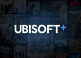
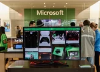

Ubisoft+ pode chegar nos consoles Xbox com mais de 60 jogos

Uma ótima notícia para quem possui um console Xbox!
O site TrueAchievements conseguiu descobrir uma lista de jogos dentro da Microsoft Store que foram atualizados com uma tag especial da
Ubisoft+, indicando quais serão os títulos que estarão no lançamento do serviço.
Ler mais
Xbox: jogos em mídia física devem acabar no Brasil

A Microsoft deve encerrar a fabricação e distribuição de jogos em mídia física do Xbox no Brasil.
Distribuidores e lojistas já estão sabendo da decisão comercial da marca.
Ler mais
Tekken 8 revela Nina Williams e mecânicas de gameplay
A Bandai Namco divulgou, neste último domingo (6), novos detalhes de Tekken 8 durante as finais do circuito mundial oficial — o Tekken World Tour Finals.
Além de mergulhar no novíssimo sistema de Heat, a empresa confirmou o retorno de Nina Williams como uma personagem jogável, apresentando seu visual repaginado.
Ler mais